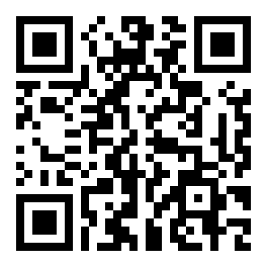

Nairobi workshop · Day 1
Follow along on your own device.
Quick interactive sketches from yesterday's discussions. Tap one to open it. They work best in landscape on a phone.

Scan to follow on your phone
Point your camera at the code to open this page on your own device.
cengkuru.github.io/infrawatch-day1
Ready to present
Partner priorities, shared ground
ReadyFive visions, one shared centre. Drag the bubbles, tap a country to read its vision.
Open →Still in progress · play, poke, tell me what is wrong
What counts as foreign-funded?
In progressThe same project, counted five different ways. The narrative is still being built.
Open →Anatomy of a project
In progressThe railway, layer by layer. Rough draft, still finding its story.
Open →What each funding type hides
In progressPick how a project is paid for, see what goes dark. Early sketch, not final.
Open →Source. InfraWatch Nairobi, Day 1, 2 Jun 2026. Working drafts by Michael Cengkuru, CoST. Tell me where I have you wrong.